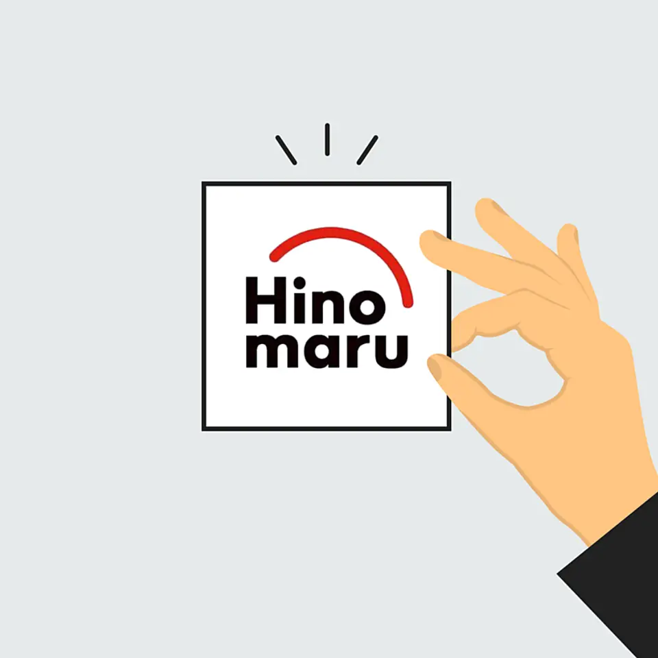
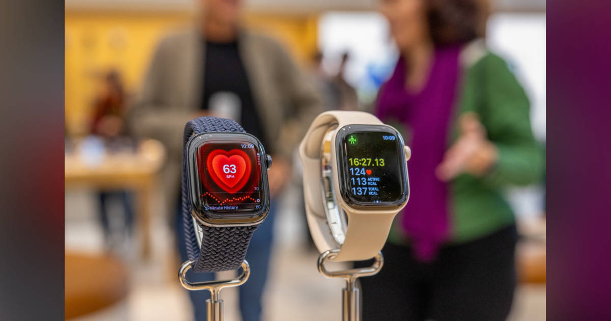

01
【実例集】就活生必見。「AI使い倒し企業」はここだ
発行日時：2026年9月23日 05:30 JST ・ NewsPicks編集部
あなたに関係ありそうな理由
生成AIを入れたかどうかで終わらせず、業務、育成、判断のどこまで変わったかを実例で比べられるためです。
概要
記事は、企業の生成AI活用を「導入済みか」ではなく、実際の仕事をどこまで変えたかで見る。OpenWorkの調査では、職場でのAI利用に触れる口コミの比率が二〇二二年の一一・二％から二〇二六年には八三・八％へ伸び、AI活用に言及する量は七・五倍になったという。ただし、全員にアカウントを配るだけでは使い込み度合いも成果も分からない。三井不動産は二〇二五年十月から全社員にChatGPT Enterpriseを配布し、八五部署にAIリーダーを置いた。月間利用率は九〇％、社内で使われたカスタムGPTは千を超え、利用者一人当たりの時間削減は一日平均四八分とする。目標だった四五分を上回った一方、価値は削れた時間そのものより、六二％がより付加価値の高い仕事に時間を使えると答えた点にある。キリンは国内約一万五千人へBuddyAIを展開し、有料版Copilotも八千人に配った。二〇二五年一月から八月にかけて約一万五千人へ草の根の研修を行い、経営層もCoreMateとして利用する仕組みを置く。ビズリーチでは社内アプリが五二に広がり、利用回数は十六万回、従業員一人当たり月一〇時間の削減につながったという。記事の重要な点は、成果をツール名で説明しないことだ。対象業務、使えるデータの範囲、現場の支援者、利用後の評価をつなげて初めて定着の姿が見える。表示コメントでも、節約した時間が本当に成長や顧客価値へ回ったのか、導入率でなく適用範囲を見るべきだという論点が出た。導入を評価するには、どの情報を扱い、誰に相談し、成功例をどう横展開するかも明らかにしたい。全社利用と小さな業務改善を結ぶ担当者がいるか、研修が一度きりで終わらないかも数字の裏側として重要になる。事務部門だけでなく、工場、店舗、営業のように時間の使い方が違う現場にどこまで届くかも次の比較軸だ。会社を比較する時も、自社で進める時も、何分短くなったかだけでなく、残った時間で何を変えたか、現場や店舗まで対象が広がるかを確かめたい。AI活用の成熟度は、華やかな導入発表より、毎日の仕事にどんな判断と余白を生んだかで読める。利用率の高い企業ほど、例外的な使い方ではなく、日常業務で再現できるかにも目を向けたい。
仕事や会話で使える一言
「AI導入率より、浮いた時間が顧客価値や育成に回っているかを見たいですね。」
NewsPicks原文を読む
02
【日の丸交通】私たちが、ロボタクシー提携に踏み切った理由
発行日時：2026年9月23日 05:30 JST ・ NewsPicks編集部

あなたに関係ありそうな理由
自動化を人員削減だけでなく、規制、現場運用、既存の仕事の移り方まで含めて考えられるためです。
概要
記事は、日の丸交通が日産、Wayve、Uberによる東京でのロボタクシー実証に加わった理由を、運転手不足と事業転換の両面から追う。二〇二六年三月、三社はセーフティドライバー付きの運行を始めると発表したが、日本で旅客を運ぶにはタクシー会社が規制上欠かせない。約五カ月後に日の丸交通が参加し、実証の座組みに現場の担い手が入った。日の丸交通は過去にZMPとの実証を約八年経験した。ルールベース型から、映像などの大量データを学習して判断するE2E型へ技術が移り、実験中に人が介入しない方式も見てきたという。政府は二〇三〇年までに自動運転サービス車両一万台を目標に掲げるが、技術ができても、誰が安全を確認し、配車し、利用者に説明するかは別の仕事として残る。同社は二千人規模の運転手を抱え、アプリ配車の比重も大きい。二〇二〇年にUberとの関係を深め、アプリ経由の売上が全体の四割超、そのうちUberが八割を占める状況になった。高齢化で都市部のタクシー運転手の平均年齢が五六歳を超える中、経営側はロボタクシーを直ちに人を置き換える手段と見ていない。まず稼働していない一割程度を補い、将来はセーフティドライバー、遠隔監視などへの職種移行を考える。日の丸交通にとっては、配車アプリで築いた顧客接点と安全運行のノウハウを、新しい技術と結び直す試みでもある。運転手への説明が後回しになれば、現場の不安は強まる。実証期間に、運行データだけでなく、利用者の反応、問い合わせ、運転手の受け止めをどう記録し、制度設計へ戻せるかが重要になる。表示コメントでも、論点は雇用が消えるかではなく、役割、評価、キャリアの設計をどう変えるかだと指摘された。導入の成否は車両の性能だけで決まらない。事故時の責任、顧客への案内、現場の教育、既存運転手の処遇を前もって設計できるかが、受け入れられる自動化かどうかを左右する。人手不足の穴埋めとサービス品質の維持を両立できるか、実証から商用化へ移る節目で見ておきたい。実証の結果を、運行の成功回数だけでなく、利用者、運転手、配車担当それぞれの負担と安心感で評価できるかも問われる。新技術を受け入れる条件は、走行性能の説明だけでは測れない。
仕事や会話で使える一言
「自動化の本当の論点は、仕事がなくなるかでなく、誰がどんな役割へ移るかですね。」
NewsPicks原文を読む
03
AIで作った資料の確認が終わらない〜チームで決める「仕事の完了条件」〜
発行日時：2026年9月23日 06:20 JST ・ KAWAI
あなたに関係ありそうな理由
AIで下書きが速くなるほど、確認や承認を含む仕事全体をどう終わらせるかが重要になるためです。
概要
記事は、AIが資料を作った瞬間を「完了」と呼べない問題を、チームで決める受け入れ条件として整理する。生成AIは議事録、企画書、調査メモの下書きを短時間で出せるが、見た目が整っているほど、誰が事実を確認し、誰が判断し、次の担当者が何をすればよいかが曖昧なまま残りやすい。記事が置く基準は、成果物を受け取った人が次の行動に移れるかだ。たとえば議事録なら、決まったこと、担当者、期限が分かり、決まっていないことはAIがもっともらしく埋めずに「未決」として残されている必要がある。生成を速くしても、情報収集、下書き、事実確認、修正、承認、受け渡しまでの総時間が減らなければ、仕事は軽くなったとは言えない。むしろ生成量が増えれば、確認件数だけが増えて疲弊することもある。そこで記事は、目的、入力、AIに任せる範囲、人の責任、受け入れ条件、測定という六つの要素を先に決めるよう勧める。受け入れ条件は「分かりやすく」ではなく、参照した一次資料を示す、数値の出所をたどれる、未確認事項を明記する、といった観察可能な言葉にする。特に、AIへ渡す入力が古い、出典が混ざる、前提が共有されていない場合、出力の文章だけを直しても問題は終わらない。着手前に素材の版を固定し、確認担当と承認担当を分け、差し戻しの理由を蓄積すれば、次の案件で同じ確認を繰り返さずに済む。測るべき数字も、作成時間だけでなく、承認までの時間、差し戻し理由、重大な誤り、待ち時間まで含める。表示コメントでは、注意書きを出すだけでなく、受け入れ条件を満たさない成果物が次の工程へ進めない仕組みが必要だという指摘があった。小さな案件で従来手順と比べ、どこでやり直しが発生するかを記録すれば、AIの効果を印象論にしないで済む。効率化の要点は、生成の速さを競うことではない。人が判断すべき箇所を残し、誰でも同じ品質で仕事を引き継げる終わり方をつくることにある。条件を最初から完璧に決める必要はないが、案件ごとに差し戻しの原因を見直せば、抽象的な注意書きを具体的な約束へ変えていける。確認に時間がかかった箇所を共有すれば、担当者個人の頑張りに依存しない工程へ近づける。
仕事や会話で使える一言
「AIの出力ではなく、次の人が迷わず動ける状態を完了にしたいですね。」
NewsPicks原文を読む
04
アップル、画面なしフィットネス端末を開発－手首装着型を想定か
発行日時：2026年9月23日 05:44 JST ・ Bloomberg

あなたに関係ありそうな理由
新しい端末の価値を、画面や機能の多さでなく、継続利用、データ、健康上の根拠から考え直せるためです。
概要
記事は、アップルが画面を持たない手首装着型のフィットネス・健康端末を初期の技術検討段階で開発していると伝える。想定されるのはWhoopのように、布製バンドの中へセンサーと演算機能を入れ、表示を見続けなくても身体データを取得する製品だ。Apple Watchのような画面付き時計とは違い、通知、アプリ、操作を増やすのではなく、装着し続けやすい形で活動、睡眠、脈拍などの情報を集めることに重心がある。もっとも、製品化は決まっておらず、仮に出るとしても二〇二八年以降になる可能性があるという。ティム・クックCEOやエディ・キュー上級副社長が関心を持つ一方、まだ試作や市場調査の段階で、発売計画と同一視はできない。背景には、WhoopやOuraのように、画面を最小限にして健康データと継続的な分析を提供する競合の存在がある。腕時計の画面を小さくするのではなく、画面がないこと自体を価値にできるかが問われる。表示コメントでは、日常のセンサー情報を負担なく集められる利点がある一方、集めたデータが本当に健康改善や病気の予防へ結び付く医学的根拠は十分でないという注意が出た。画面がない端末は、常時通知に注意を奪われず、データを後から確認する使い方を促す可能性もある。ただし、数値の変化が不安を増やしたり、利用者が診断と取り違えたりしない設計も必要になる。記事の段階では、センサーの種類や提供時期は確定していない。だから現時点では製品発表として扱うより、アップルが健康データの接点をどう広げようとしているかを示す観測として読むのが妥当だ。利用者にとっては、測れる項目が増えることと、生活が良くなることは別だ。企業にとっては、継続して集まるデータが製品競争力になるが、精度、説明、プライバシー、医療との境界も同時に問われる。今後見るべきなのは、端末の外観より、どのデータをどう解釈し、利用者が何を判断できるようになるのかだろう。画面をなくすことで操作の負担を減らせても、サービスが不透明なら信頼は得られない。健康をうたう製品ほど、便利さ、根拠、データ利用の説明を分けて確かめたい。常に身に着ける製品だからこそ、利用者が確認できる情報と企業側が扱う情報の境目にも注意が要る。
仕事や会話で使える一言
「健康端末は、測れる項目より、データをどう役立てるかを説明できるかが大切ですね。」
NewsPicks原文を読む
05
【Takram渡邉康太郎】成果はなくても、続けていい
発行日時：2026年9月23日 05:30 JST ・ 10分読書
あなたに関係ありそうな理由
仕事でも創作でも、目に見える成果だけで価値を決めず、続ける過程から何を残すかを考えられるためです。
概要
記事は、Takramの渡邉康太郎氏が著書『生きるための表現手引き』を手掛かりに、成果が見えない表現や学びをなぜ続けてよいのかを語る。社会では成長、成功、失敗といった言葉で仕事や人生を測りがちだが、その軸だけでは途中の経験が消えてしまう。氏は、外国語を学び始めた人のたどたどしい発話を例にする。上達すれば不完全だった言葉は不要に見えるかもしれないが、できなかったことに向き合った時間や、そこにあった視点まで価値がないわけではない。人の見方は、他者との出会いや環境によって変わる。表現は完成品を出す行為だけでなく、自分の中に残る断片を受け取り直す行為でもあるという。記事は、亡くなった人を思い出す時に、作品や実績より、話し方の癖、間の取り方、声のような「ノイズ」が先に浮かぶことにも触れる。会話は情報を受け渡すだけでなく、その人固有の音や感覚を交わす営みだ。さらに、肉眼では見えにくい六等星にも意味があるという比喩を通じ、社会で見えやすいことと、価値があることを同一にしない姿勢を示す。これは成果を軽んじる話ではない。売上、締切、評価が必要な場面であっても、それだけでは拾えない探究や関係を持ち続ける余地を問う。管理の言葉に置き換えると、短期のKPIだけでなく、次の仮説や関係を生む活動をどう守るかという問いになる。成果の対象を狭く決めるほど、まだ説明できない試みは止まりやすい。途中の記録を残し、失敗を単なる減点にせず、何を試し何が分かったかを共有できれば、続ける時間は次の成果につながる土台になり得る。表示コメントでは、成果が保証されない活動を続けるから予想外の出会いが生まれること、効率を求める環境で遅い実践が心のバランスになることが語られた。仕事に置き換えれば、すぐに数字にならない試作、読書、対話、振り返りをすべて無駄と扱わないことにつながる。評価の基準を増やしすぎる必要はないが、短期の結果だけで中断させない場を持つことで、人や組織は次の選択肢を育てられる。続ける理由を先に証明できなくても、経験を言葉にし、時々見直すことには意味がある。すぐに評価へ換算できない過程を残すことで、後から別の人がその試みを受け取り、思いがけない方向へ育てる余地も生まれる。
仕事や会話で使える一言
「まだ成果にならない時間にも、次の選択肢を育てる価値があるかもしれません。」
NewsPicks原文を読む